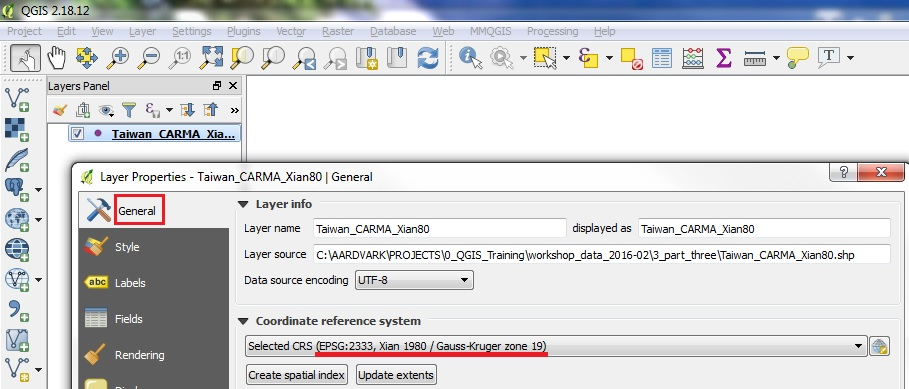

Join by Location (aka Spatial Join)
A common GIS task is to join the attributes from one spatial data layer to another.
In this example we will join attributes from a polygon layer to a points layer, based on which polygon contains the points.
The following exercise uses data from:
1. Workshop Data 2015-03 PART THREE Taiwan
1. Workshop Data 2015-03 PART THREE Taiwan
- For this exercise, we'll use a set of points showing power plant sites in Taiwan from the CARMA database
- Add Vector Data, set UTF-8 encoding, and browse to part_three/Taiwan_CARMA_Xian80.shp
- Right click on the Layer in the Layer List and the General tab, to check the Coordinate Reference System (projection) for this layer
- Note that it is in Projected CRS, EPSG:2333. Cancel the Properties Dialog window.
- Target Points layer should be ready for the join

- Add Vector Layer and browse to the part_three/tw_pop_xian80.shp layer, encoding = big5
- Click on the tw_pop_xian80 layer in the layer list and drag it below the Taiwan_CARMA layer. Now the points should be on top of the polygons in the Map View
- Right click on the tw_pop_xian80 Layer in the Layer List and the General tab, to check the Coordinate Reference System (projection) for this layer
- Note that tw_pop_xian80 is in the Projection: CRS EPSG 2333, Xian 1980 Zone 19
- This is the same projection as the target layer, so we can proceed with the Spatial Join
- If the Join layer was in a different projectiion we would need to reproject the join layer first, as illustrated in the following step

- Add Vector Layer and browse to the part_three/tw_pop_xian80.shp layer, encoding = big5
- Click on the tw_pop_xian80 layer in the layer list and drag it below the Taiwan_CARMA layer. Now the points should be on top of the polygons in the Map View
- Right click on the tw_pop_xian80 Layer in the Layer List and the General tab, to check the Coordinate Reference System (projection) for this layer
- Note that tw_pop_xian80 is in the Projection: CRS EPSG 2333, Xian 1980 Zone 19
- This is the same projection as the target layer, so we can proceed with the Spatial Join
- If the Join layer was in a different projectiion we would need to reproject the join layer first, as illustrated in the following step
Proceed to Spaital Join Instructions